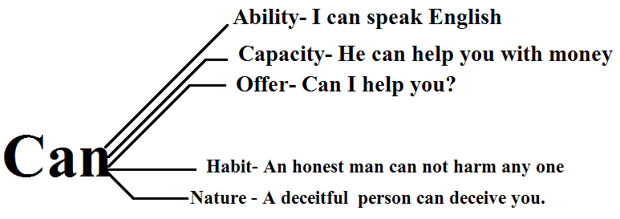

Listen to all these lessons via podcast: podcast name: Alok Pandey learn to speak English fluently.
Why model verb is used.
In English, there are varieties of rules and verbs. Each verb except the Model auxiliary verb appears with a specific sense. Those demonstrate a definite event. But here the word “model” (Model auxiliary verb) plays a vital role.
When a speaker wants to reveal his or her mood. Nobody knows what will he say. It depends on his mood, and he reveals accordingly.
Definition of a model verb.
So, the definition of a model verb is obvious now. Thus the model verb is used to reveal the mood of the speaker. Hence after a model verb, the base form of the verb appears.
Furthermore, taking the series of the topic ahead. I would like to insist you to read all the verb in details. For all the series kindly follow these links.
- What is a verb
- Non-finite verb
- Gerund verb
- Participle grammar.
And now we are in finite verb grammar category. As demonstrated in the chart below. We will learn all the verb respectively.
Use of can.
So, in the graph, the use of can appeared in a different context. And hence it is obvious to say, we use it to show (ability, capacity, offer, habit, and nature).
Some more examples:
- I can speak English fluently.
- A scientist can invent the Coronavirus vaccine.
- Australia’s team can not defeat the Indian team.
- Amazon can give a 20% offer on winter clothes.
- Indian team can score more than 300 in one day match.
- A hit-mat can shoot him.
Some other meaning of Can.
noun Can (CONTAINER) a closed metal container, especially cylinder-shaped, in which some types of drink and food are sold: a can of soup/beans.
Can noun (HEADPHONES) : I was wearing cans so I didn’t hear anything.
verb Can /kæn/:To put food and drink into a closed metal container without air: He works in a factory where they can fruit.
noun Can (PRISON): He spent ten years in the can for armed robbery.
Can noun (TOILET) :the can US – toilet
verb Can /kæn/: To remove someone from their job: Many people were canned from the job while pandemic.
verb Can /kæn/ (stop): To stop doing something or making noise: Hey, can it, would you? I’m trying to sleep.
Must read these important topics.